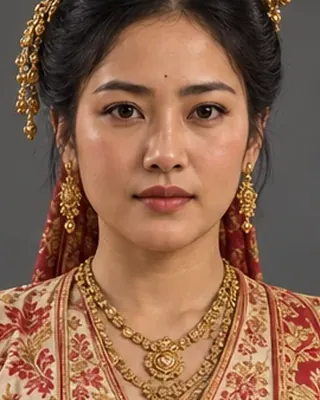

early 14th century · Kamata princess, queen of Sukhaangphaa

Rajani's sister, also given to Sukhaangphaa under the treaty; mother of Chao Pulai.
Record confidence: medium.
Open interactive profile
c. 1308